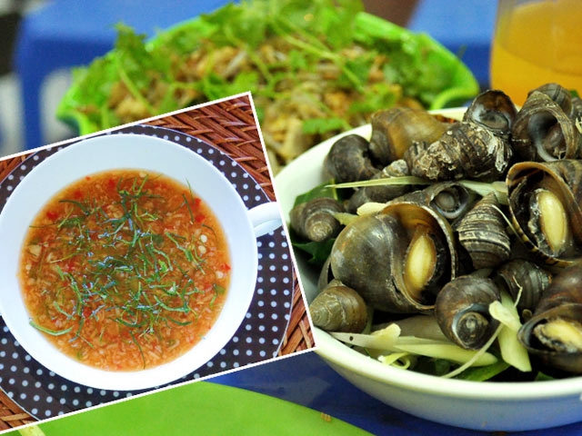
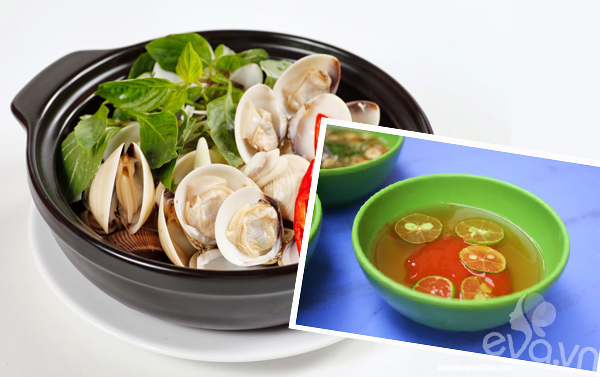

Cách pha nước chấm ốc:
Nguyên liệu: 2 trái ớt; 1 miếng gừng; 3 tép tỏi; 2 muỗng sả; 2 lá chanh thái nhỏ; 2 muỗng nước mắm; 3 muỗng nước lạnh; 1.5 muỗng dấm; 2.5 muỗng đường.
Cách làm: Cho tỏi, ớt, sả, gừng vào cối giã nhỏ. Nước mắm, đường cho vào bát hòa trước, sau đó cho nước lạnh và dấm vào hòa chung. Cuối cùng cho hết hỗn hợp tỏi ớt đã giã vào, hòa đều. Nêm lại cho vừa ăn là xong. Trước khi ăn cho lá chanh vào nhé!
Cách pha nước chấm ngao:
Cách pha nước chấm ngao cũng khá đơn giản. Thông thường ở các quán ăn người ta sẽ cho bạn hai loại nước chấm.
Cách 1: Nguyên liệu gồm nước mắm ngon, nước sôi, đường, quất, tương ớt. Sau đó hòa nước mắm với lượng nước sôi vừa đủ, nếm thấy vừa miệng. Cho đường, tương ớt vào, khuấy đều cho tan. Sau đó thêm quất thái lát vào là được. Nếu thích cay, bạn có thể cho thêm ớt tươi vào.
Cách 2: Nguyên liệu bao gồm đường, gia vị, ớt, quất. Thực ra bạn có thể thay chanh cho quất nhưng với nước chấm này, cho quất thơm hơn. Cho gia vị bột canh vào bát, thêm đường vào, trộn đều. Sau đó cho ớt thái lát hoặc băm nhỏ, rồi vắt quất lên, trộn đều là được.
Với cách làm này, một số người còn có thể cho thêm ít tỏi băm, sả băm vào, trộn đều lên chấm cũng rất ngon.
Ngoài ra, ai ăn được mù tạt có thể thêm vào một chút cũng rất hấp dẫn.